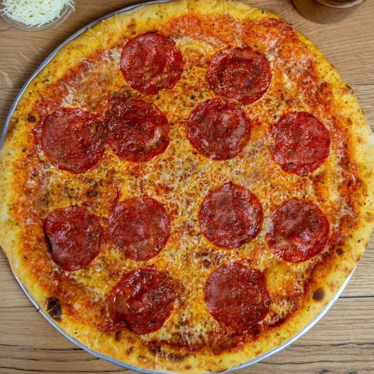
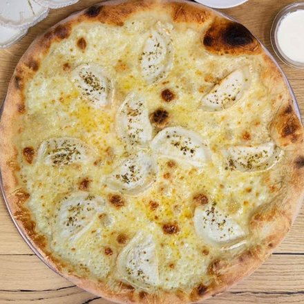

Sur le pouce
Une part à la main, debout devant la boutique ou en marchant dans la rue Saint-Laud. Avec les doigts, évidemment.
Une vraie pizza artisanale, que l'on choisit à la part comme on choisirait une viennoiserie. Rapide, bonne et sans chichi.
Chez Pizza Capri, pas besoin de commander une pizza entière ni d'attendre une table. On regarde la vitrine, on choisit sa part, on repart avec. L'idée a quarante ans et elle colle toujours aussi bien aux journées pressées.
La part démarre à 2,50 €. Et pour les grandes tablées, toutes les recettes existent aussi en pizza entière.

Une part à la main, debout devant la boutique ou en marchant dans la rue Saint-Laud. Avec les doigts, évidemment.
Pour le bureau, le parc ou la maison. La pizza se mange chaude comme froide, elle supporte très bien le trajet.
Toute la carte se décline en pizza entière, à partager à plusieurs. Salée pour commencer, sucrée pour finir.

Aller vite ne veut pas dire bâcler. Les pizzas sont préparées sur place, avec des gestes d'artisan et des produits choisis.
Un savoir-faire né en 1983 et transmis de boutique en boutique.
Manger vite sans manger n'importe quoi : c'est toute l'idée de la part.
Une maison qui grandit en gardant son esprit de famille.